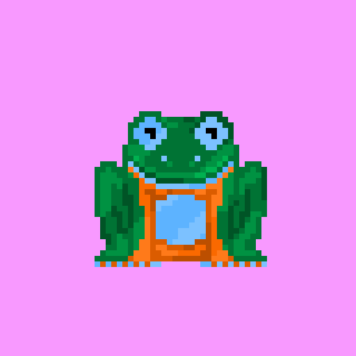

Loading rarity…
Rarity explorer
Discover legendary frogs and hidden traits
Filter, sort, and search the entire Fresh Frogs collection. Every card includes live owner data, staking status, and layered artwork rendered directly from the metadata order.

Flip between rarity themes to preview foil-inspired card treatments.

